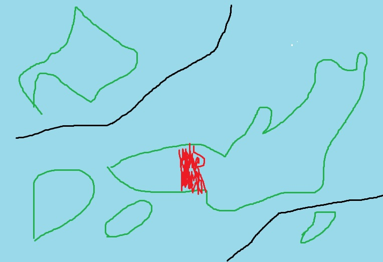

兵庫県民の兵庫県民による兵庫県民のための兵庫県の紹介
概要
人口は約540万人で、2011年頃から人口が年々減少している。
北部は自然が豊か、南部は都市が発展しており、一度で二度おいしい県。
住みたい県ランキングは絶妙の8位あたりになることが多い。
食文化
- 明石焼き おいしい、たこ焼きと似てる
- そばめし おいしい、刻んだソース焼きそばをご飯と混ぜたもの
- いかなごのくぎ煮 おいしい、イカナゴという稚魚を甘辛く煮たもの
- そうめん おいしい、素麺神社も存在するぐらい生産量が多い
歴史
平安時代以前：比較的大きな都市であり港や荘園などがあった。武器を収める倉が作られたことが名前の由来？
鎌倉時代～戦国時代：発展していくも、国際貿易の舞台は堺に移っていった。
江戸時代：様々な業が盛んに（酒造、製紙、鉱業など）
明治時代：廃藩置県により3つの地域が合併し現在の県域が確定
平成：バブル崩壊による不況、阪神淡路大震災
参考：https://web.pref.hyogo.lg.jp/kk32/pa13_000000011.html
観光
おすすめ観光スポットランキング
| 一位 | 姫路城 |
|---|---|
| 二位 | 神戸市須磨海浜水族園 |
| 三位 | 城崎温泉 |
| 四位 | 六甲山 |
| 五位 | 竹田城跡 |
クイズ
Q:兵庫県の名産品はどれ？
正解は…